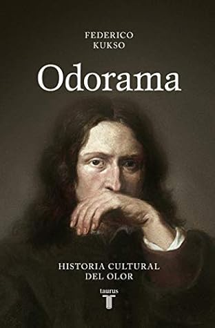

Odorama: Historia cultural del olor
Reseña por Jorge I. Zuluaga

Ver reseña en GoodReads (necesita cuenta)
Este es mi primer libro de Federico Kukso. Conocí a este periodista científico argentino gracias a sus muy informativas y originales publicaciones en Twitter. Afortunadamente pude toparme con sus posts durante la etapa en la que esa red social era un poco mejor, es decir, cuando el algoritmo te mostraba las publicaciones de las personas a las que seguías y no aquellas que tenían más likes o que hacían que la gente se enganchará como adictos. Esos tiempos pasaron, le perdí el rastro a Kukso en el maremagnum en el que se convirtió X y por eso me complació mucho descubrir este libro suyo.
Me complació descubrirlo y me encantó leerlo.
Lo mejor del texto es que es una deliciosa combinación de divulgación histórica, arte, etnografía y ciencia. Pocas veces se reunen en un solo libro y en un mismo autor temas tan diversos y atractivos.
El subtítulo del libro "Historia cultural del olor" es incompleto para describir la verdadera panoplia de su contenido.
La primera y una fracción de la segunda parte del libro, efectivamente abordan una Historia de los olores y del olfato. Desde los olores y el papel del olfato en el antiguo Egipto y la antigua Roma, pasando por el que yo llamaría ahora, el perturbador mapa olfativo de la edad media y principios de la edad moderna, hasta llegar, paulatinamente pero no sin saltos bruscos olfativos, al mundo desodorizado del presente.
Hasta allí, una verdadera Historia cultural del olor, como promete.
A partir de la segunda mitad de la parte II, sin embargo, el contenido empieza a tomar otro rumbo. Siempre, para bien del libro, por supuesto. Todo comienza con un capítulo dedicado al olor (o a los mil olores como los nombra Kukso) de la Buenos Aires del período colonial. Un interesante capítulo que cuenta unas cuantas verdades sobre esta admirada capital latinoamericana. ¡Buen detalle de Kukso para con su tierra natal!. A este le siguen excepcionales piezas de divulgación científica que cubren desde (y me robo algunos de los nombres del libro) la fisiología del mal olor, los olores del cuerpo humano, la anatomía de las flatulencias, la memoria olfativa, el lenguaje de los olores y la osmología o la diversidad del olor ¡que buenos textos!
La tercera y última parte, que viene después del clímax científico en la segundo, y como solo pasa en los buenos libros, no deja de sorprender y agradar. Allí Kukso se deja venir con unas reflexiones y piezas de divulgación sobre lo que es y será el papel del olfato en el mundo presente y futuro: el marketing olfativo, tecnologías del olor, el olor y la enfermedad, resucitando olores perdidos y los denominados archivos olfativos.
No hay al menos un capítulo (o muchos) de este libro que una persona con cualquier tipo de interés, sea este científico, humanístico, literario, artístico, no encuentre digno de ser disfrutado. Por eso digo que es un libro perfecto para recomendar e incluso para regalar.
Me quito el sombrero delante de Kukso porque además se nota evidentemente el esfuerzo de investigación monumental (reflejado además en la sección de agradecimientos) que está detrás de la creación de este clásico inmediato de la divulgación.
¡A por más libros de Kukso!